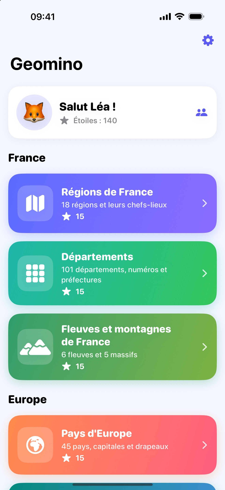
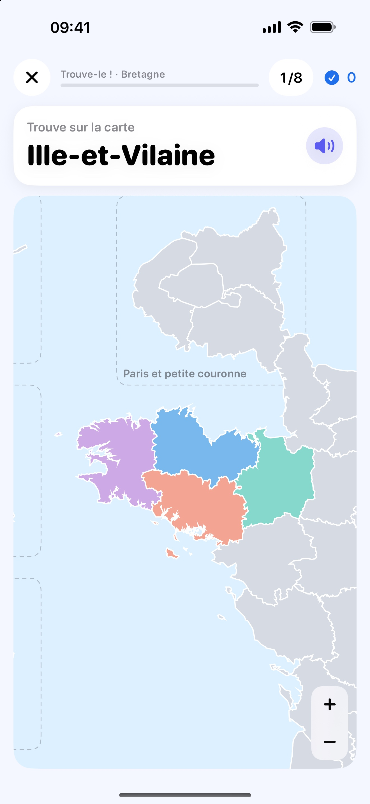
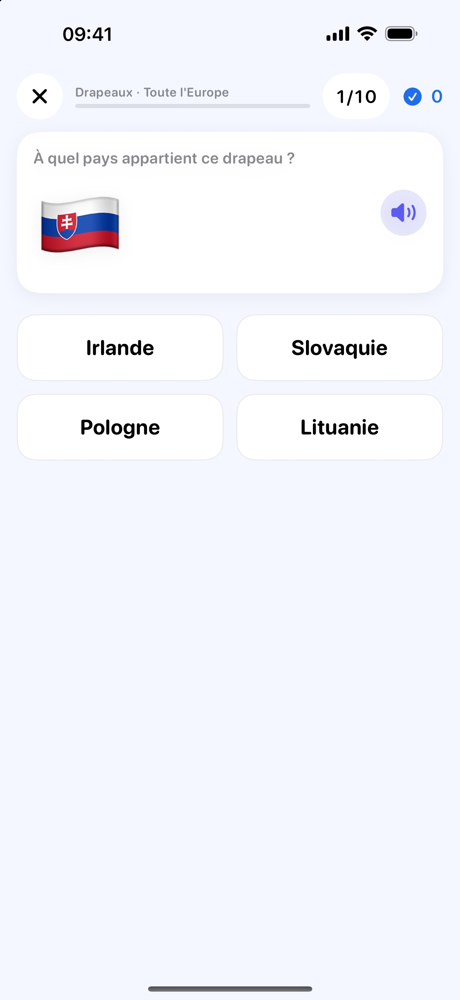
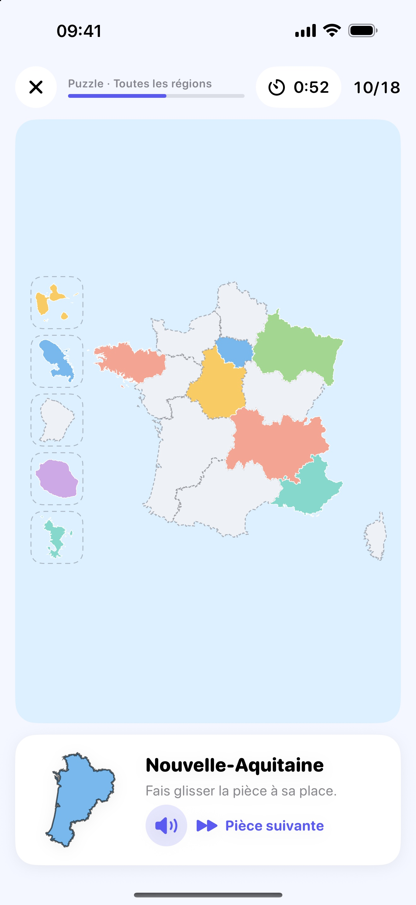
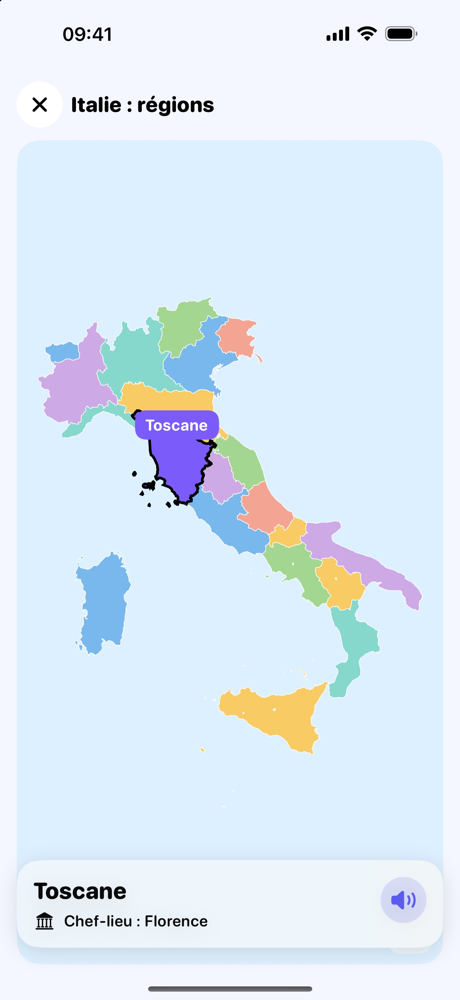

Pour les enfants de 6 à 12 ans
La géographie en jouant
Régions et départements de France, pays d'Europe, fleuves et montagnes, Espagne, Italie et Allemagne : Geomino fait apprendre les cartes avec des jeux courts et des étoiles à gagner.
Télécharger dansl'App Store
Jeux
Huit façons d'apprendre les cartes
Des parties de dix questions, trois niveaux de difficulté, et les erreurs reviennent plus souvent pour mieux les retenir.
Explorer
Touche une zone pour voir et entendre son nom, sa capitale ou son numéro. Toujours gratuit.
Trouve-le !
Le nom s'affiche, l'enfant touche la bonne zone sur la carte.
Quelle forme ?
Une zone s'allume : laquelle est-ce ? Trois ou quatre réponses au choix.
Préfectures et capitales
Chefs-lieux des régions, préfectures, capitales des pays et des Länder.
Numéros
Les 101 numéros de département, ceux des plaques et des codes postaux.
Drapeaux
Les drapeaux des 45 pays d'Europe.
Puzzle
Fais glisser chaque pièce à sa place sur la carte vide, avec un chrono et un record.
Contre-la-montre
60 secondes pour donner un maximum de bonnes réponses.




Cartes
10 cartes, de la France à l'Europe
Pour les parents
Pensé pour les enfants, rassurant pour les parents
Contrôle parental
Les réglages et l'achat sont derrière une multiplication écrite en lettres.
Sans pub ni traceur
Aucune publicité, aucun compte, aucune donnée collectée.
Hors ligne
Tout fonctionne sans Internet, en voiture comme en vacances.
Jusqu'à 4 joueurs
Chaque enfant a son profil, ses étoiles et son niveau : facile, normal ou expert.
Lecture à voix haute
Les questions et les noms sont lus, pour les plus jeunes lecteurs.
5 langues
Français, anglais, espagnol, italien et allemand, au choix dans les réglages.
Geomino complet
Toutes les cartes et tous les jeux, jusqu'à 4 joueurs et tous les autocollants. Un seul achat, sans abonnement, partagé avec la famille. Déjà gratuit : l'Explorateur sur toutes les cartes, les régions de France et les départements d'Île-de-France et d'Auvergne-Rhône-Alpes.
Disponible sur l'App Store
Geomino est disponible sur iPhone et iPad. Gratuit pour commencer, sans compte et sans publicité.
Télécharger dansl'App Store